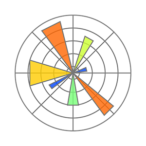

DA 348
DATA DISCOVERY AND MANAGEMENT
How to Scrape Data from the Internet
HTML Basics - last edited April 1, 2024
HTML, stands for Hyper Text Markup Language, is the standard markup language for creating web pages. HTML defines the structure of a web page and shows its content. HTML consists of a series of elements which tell browser how to display the content correctly. Elements are declared by using tags: an opening tag and a closing tag. The element's content is placed in between those two tags.
At the very basic, an HTML file needs:
1. A document type declaration:<!DOCTYPE html>
2. The HTML document tags:starts with <html> and ends with </html>
3. The page content tags:starts with <body> and ends with </body>
When we type in a URL in the search address bar on an internet browser, we are sending an HTTP request for a webpage, and the webpage server will send back a response to our computer. Our browser will render the page based on the HTML elements consist in the file.
Requests
Requests is an HTTP library for Python that pulls the raw content of a webpage, which is similar to opening an HTML file on Notepad or code editors. To pull the webpage content from a specific URL, we use the.get() method, then we store the content in variable called response. Finally, to show the content on Jupyter Notebook, we use .text function inside a print method. For example:
import requests
response=requests.get("https://akhadianharnowo.github.io/Dr.H/basic1.html")
print(response.text)
Beautiful Soup
a Data Scraping Tool - last edited September 3, 2024
Beautiful Soup is a Python library for parsing a document. Beautiful Soup works by changing a document into an object that can be parsed to extract data. Beautiful Soup has methods that allow us to find or filter tags, navigate through the object, and other that will help us clean the markup object from the tags and elements.
First of all, we need to create a Beautiful Soup document, which is commonly called 'soup' (but you can call it anything you want). Methods in Beautiful Soup library can help us find the HTML tags and extract the string from the results. To create the soup, we call the constructor: BeautifulSoup() and pass in two parameters: web_page and "html.parser". For example:
from bs4 import BeautifulSoup
response=requests.get("https://akhadianharnowo.github.io/Dr.H/basic.html")
web_page=response.text
soup = BeautifulSoup(web_page, "html.parser")
soup
.find() method to find the HTML elements in the soup. Click here to read the complete Beautiful Soup documentation.
# to find and extract the Heading 1
soup.find("h1")
# to extract just he text in between the h1 tags
soup.find("h1").text
# to find the HTML element that contains an image
soup.find("img")
.find_all() method to look through HTML elements in the soup that match the filter.
# to find all Heading 2 elements in the soup
soup.find_all("h2")
# to find all images in the HTML file
soup.find_all("img")

Akhadian Harnowo, Ph.D
Associate Professor of Production and Operations Management
Washburn School of Business
Topeka, Kansas, 66621
akhadian.harnowo@washburn.edu
Popular Python Libraries
-
 NumPy
NumPy
Math Calculations -
 Pandas
Pandas
Data Wrangling -

Matplotlib
Data Visualization

School of Business
Data Analytics Management MBA International Business General Business Finance Entrepreneurship Economics Marketing Accounting MAcc